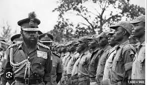
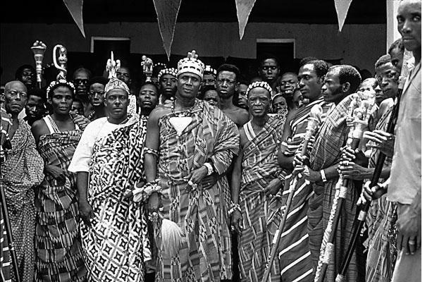

Pre-colonial History
Before the arrival of Europeans, the area now known as Nigeria was home to many advanced civilizations and kingdoms:
- Nok culture: One of the earliest known civilizations in the region, beginning around 1500 BC
- Hausa Kingdoms: Inhabited the north of the region
- Edo Kingdom of Benin: Located in the south of the region
- Igbo Kingdom of Nri: Located in the southeast of the region
- Yoruba Ife Empire: Succeeded by the Oyo Empire in the southwest
- Sokoto Caliphate: Founded in the early 19th century by Usman dan Fodio
Independence and Post-colonial History
- Independence: Nigeria gained independence from Britain in 1960
- Civil war: A civil war between the federal government and the former Eastern region, Biafra, took place from 1967 to 1970
- Military dictatorships: Military groups ruled the country from 1966 to 1979 and from 1983 to 1999
- Civilian rule: A president was elected in 1999, reestablishing civilian rule



Colonial History
- British coloniazation
- The British established a presence in the region in the 1850s, and consolidated their control in the late 19th century
- British administration
- The British built ports and a railway network, but also used purchasing cartels to keep prices low, damaging Nigerian agriculture
Key Facts About Nigeria
Nigeria’s history reflects a mix of ancient
civilizations, colonial influences, struggles
for independence, and ongoing efforts to
address social and political challenges.
- Capital: Abuja
- Largest City: Lagos
- Official Language: English
- Population: Over 200 million (as of 2006), making it the most populous country in Africa
- Ethnic Groups: Over 250 ethnic groups, with the major ones being the Hausa, Yoruba, and Igbo
- Religion: Predominantly Islam in the North, Christianity in the south, and the traditional African religions across the country.